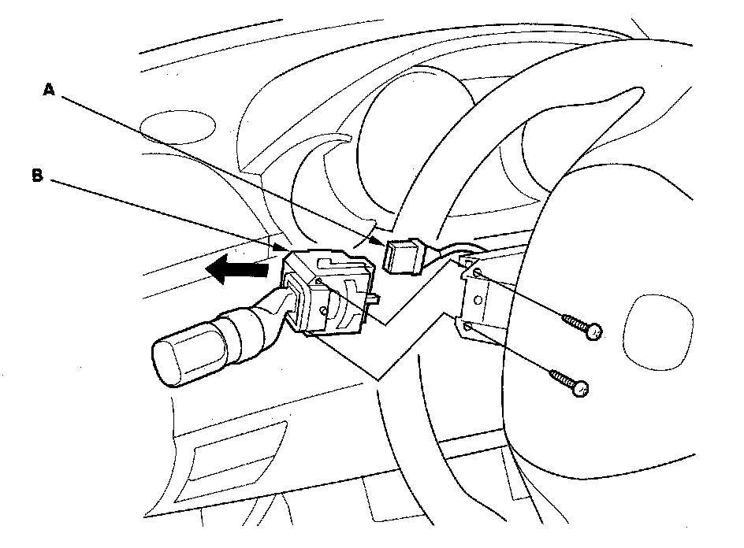
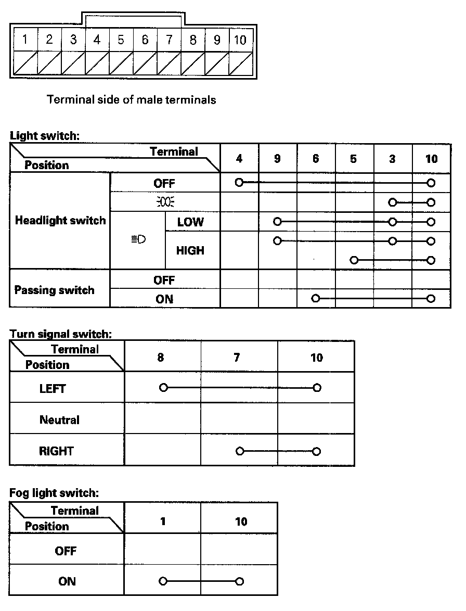

Combination Light Switch Test/Replacement
Combination Light Switch Test/Replacement1. Remove the driver's dashboard lower cover.
2. Remove the steering column covers.

3. Disconnect the combination light switch 20P connector (A) from the combination light switch (B).
4. Remove the two screws, then slide out the combination light switch.

5. Inspect the connector terminals to be sure they are all making good contact.
- If the terminals are bent, loose or corroded, repair them as necessary, and recheck the system.
- If the terminals look OK, check for continuity between the terminals in each switch position according to the tables.
6. If the continuity check is not as specified, replace the switch.